Desafío
Diferenciar a Lara de un mercado saturado de coaching, frases motivacionales y contenido psicológico superficial.
Identidad visual y verbal
Psicología clínica con enfoque existencial.
Dar forma a lo que todavía está en proceso de ser comprendido.
El objetivo fue desarrollar una identidad visual y verbal para Lara Silva, psicóloga clínica con enfoque existencial. La marca tenía que transmitir confianza profesional, sensibilidad humana y profundidad sin recurrir a los códigos genéricos del bienestar digital.
El proyecto parte de una presencia poco consolidada: sin logo, paleta, tono ni sistema gráfico definido. La oportunidad consistió en construir una identidad clara, ética y reconocible para Instagram y otros puntos de contacto.
Diferenciar a Lara de un mercado saturado de coaching, frases motivacionales y contenido psicológico superficial.
Psicología clínica con enfoque existencial para jóvenes y adultos que buscan comprender lo que sienten y vivir con mayor autenticidad.
Cercano, calmo, reflexivo y profesional. Una voz que acompaña sin imponer respuestas ni prometer soluciones rápidas.
La terapia no te da respuestas hechas: te ayuda a construir preguntas más propias.
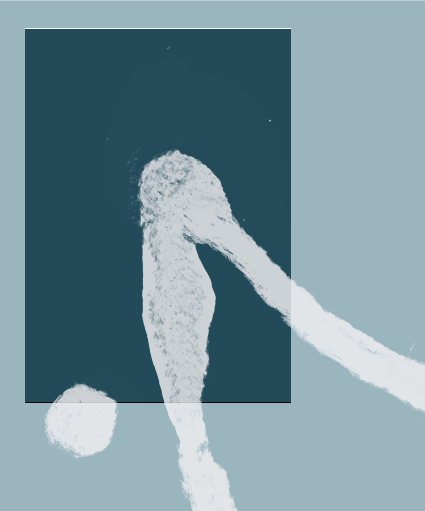
La identidad visual parte de la mancha como metáfora de aquello que aparece difuso, ambiguo o difícil de nombrar: emociones, preguntas, crisis, vínculos e incertidumbre.
En lugar de cerrar sentidos, el sistema visual abre un espacio de interpretación. La marca no busca explicar todo de inmediato: propone pausa, escucha y resignificación.
El universo visual toma como punto de partida la lógica de las manchas del test de Rorschach y su relectura en el arte pop, especialmente las obras Rorschach de Andy Warhol. La referencia no se copia de forma literal: se traduce en un lenguaje propio de transparencias, texturas y formas orgánicas.
Ver exposición Rorschach Paintings en Gagosian
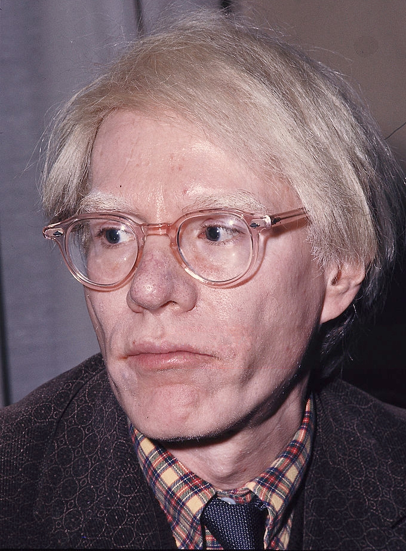
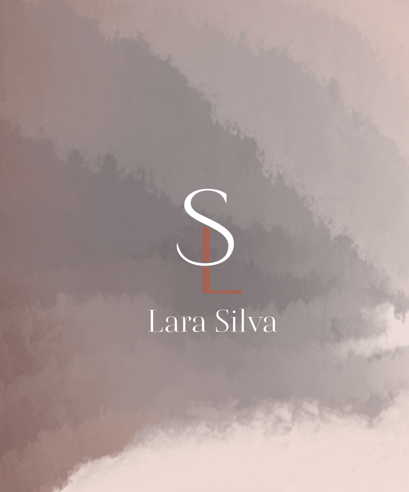
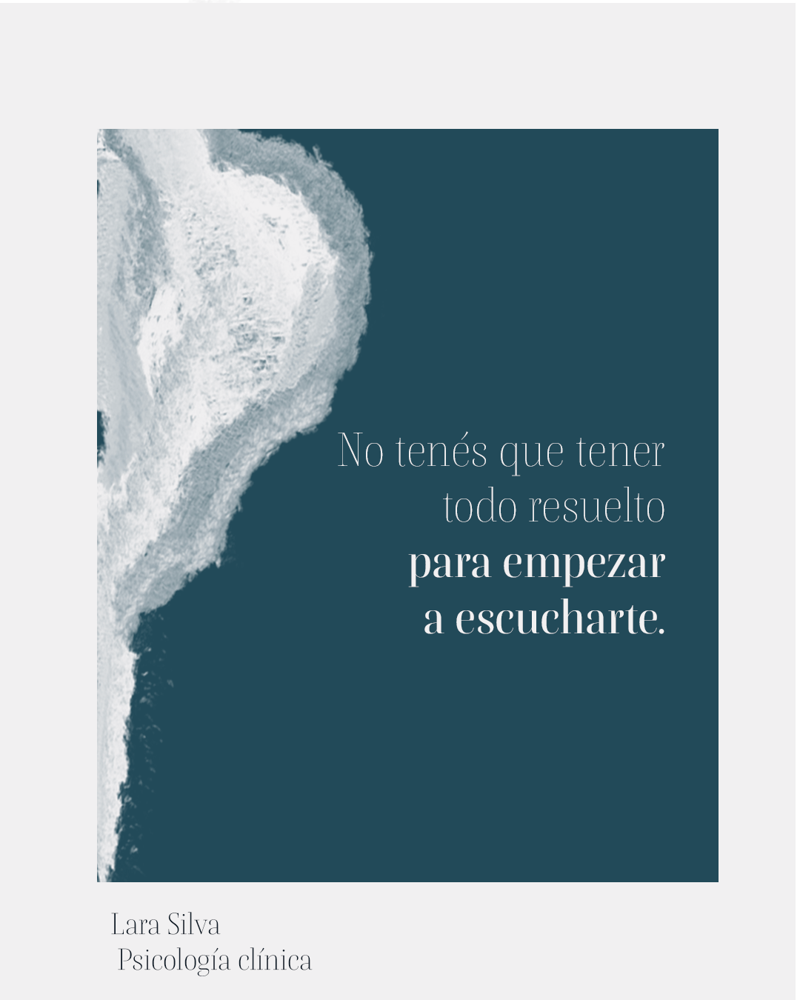
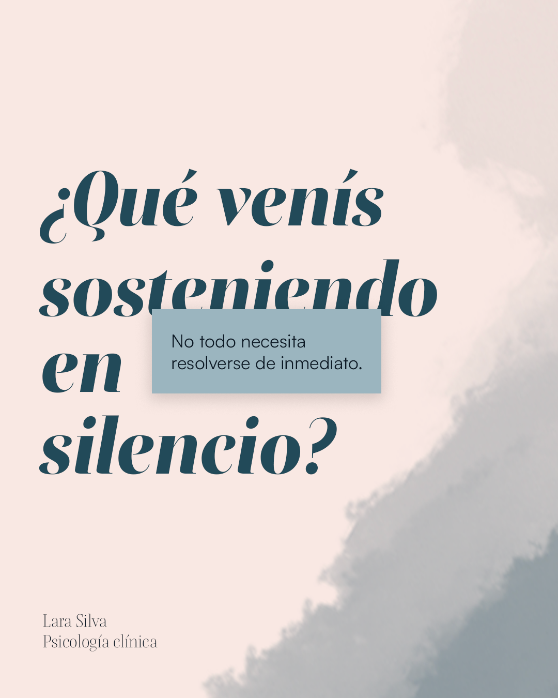
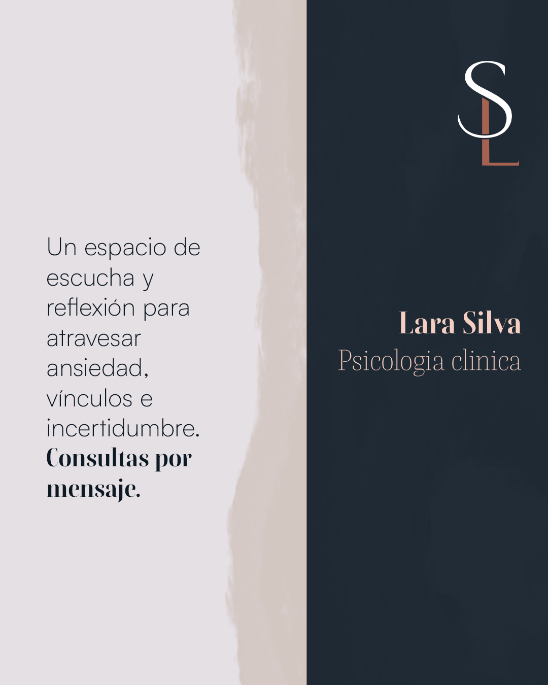
Referencias visuales externas: Wikimedia Commons y Gagosian.
El sistema combina una paleta cálida-profunda, tipografías con contraste y manchas orgánicas que acompañan la lectura sin competir con ella.
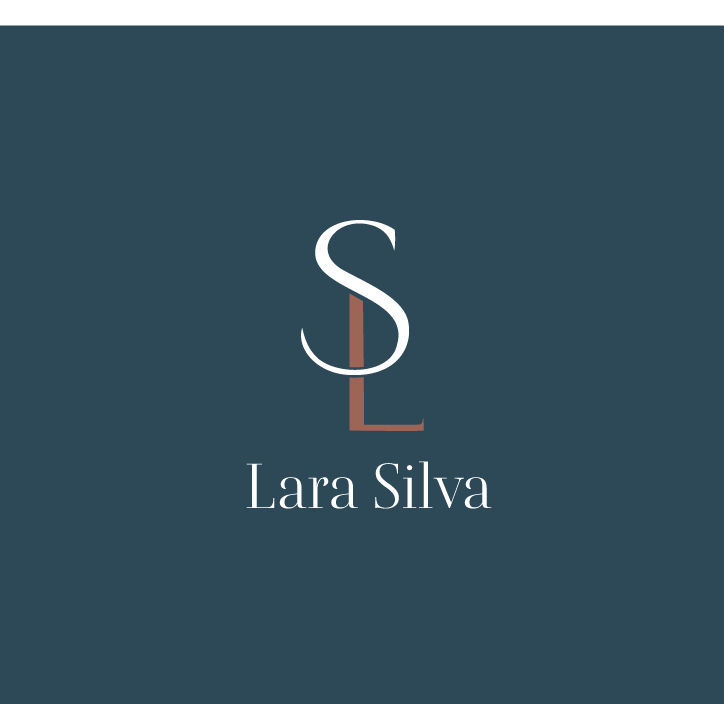
Se utiliza para títulos, frases conceptuales y momentos de mayor pausa editorial.
Ordena textos, datos y piezas informativas con una lectura clara y contemporánea.
Las aplicaciones priorizan Instagram como canal inicial: feed, historias destacadas y link en bio. Cada pieza mantiene una estética serena, legible y responsable para hablar de salud mental.
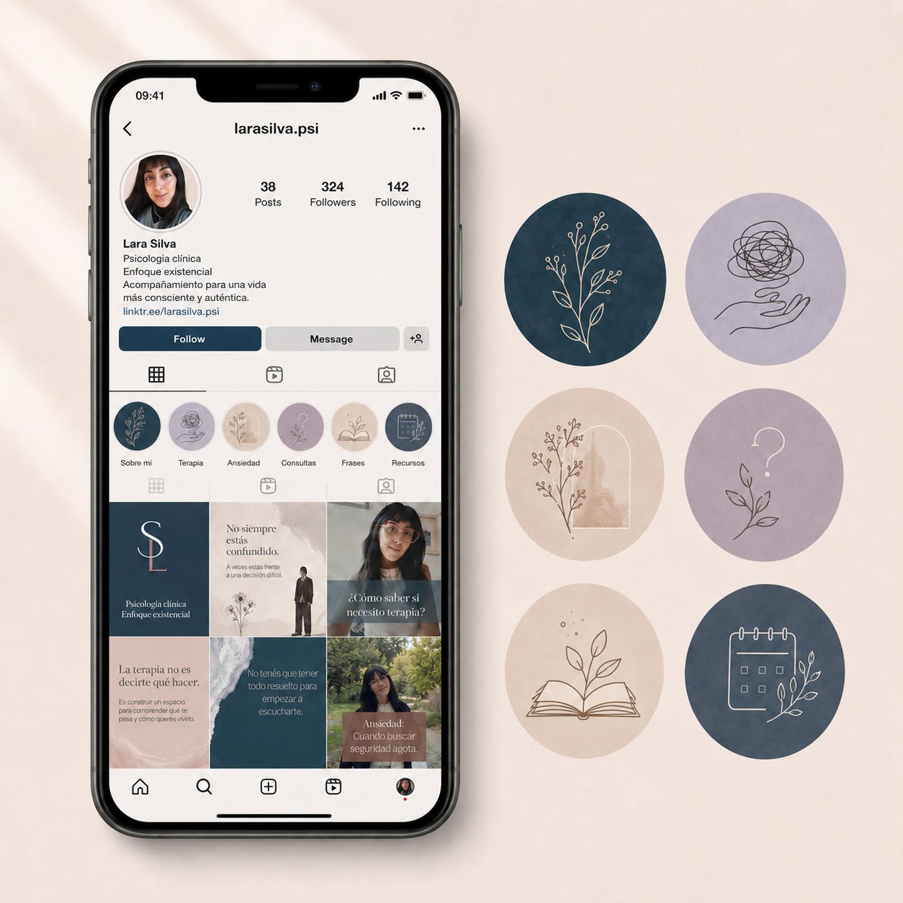
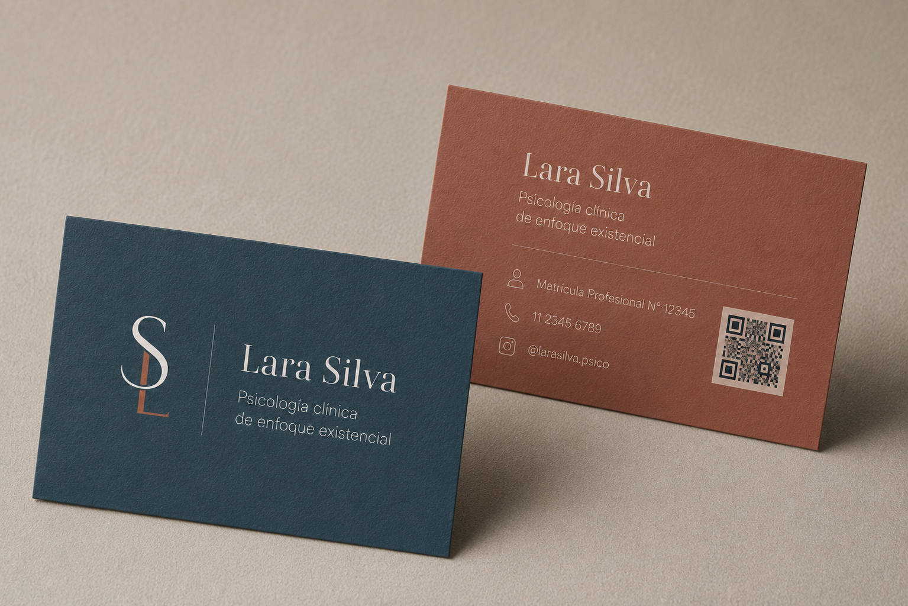
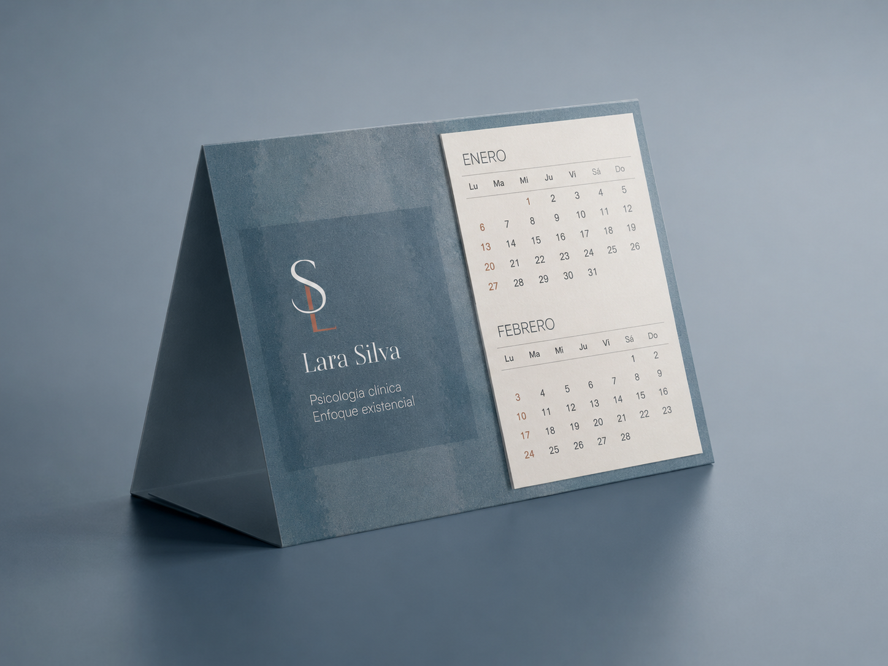
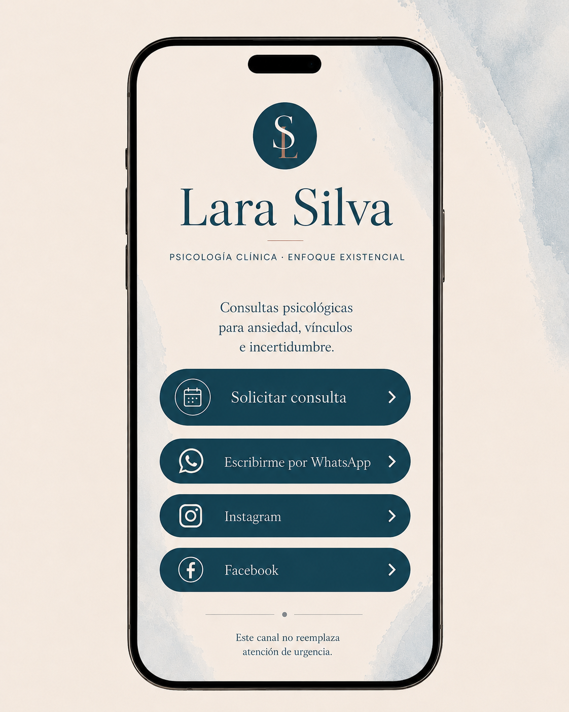
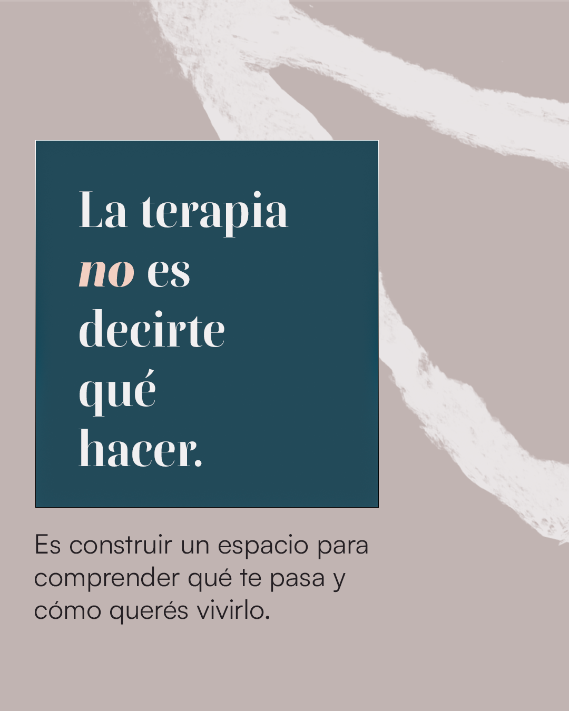
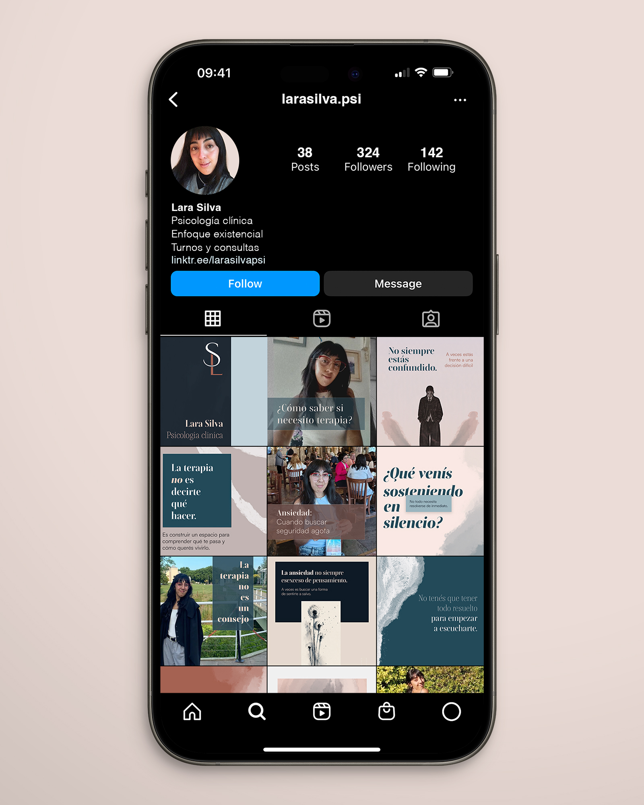
La propuesta construye una marca personal sensible, profesional y reconocible. El sistema permite iniciar una presencia digital clara, con una voz ética y un universo visual propio para hablar de ansiedad, vínculos, crisis e incertidumbre desde una mirada clínica-existencial.